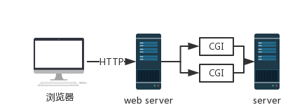
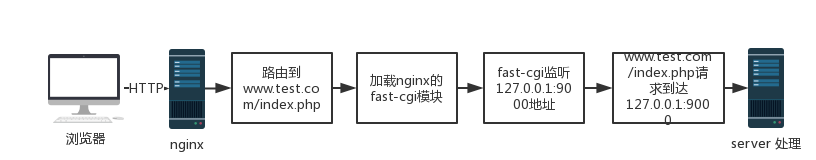

PHP-FPM与Nginx通讯机制
CGI协议
- 通用网关接口（Common Gateway Interface/CGI），CGI描述了服务器和请求处理程序之间传输数据的一种标准。
- Common：比如Java的Servlet，Python的WSGI，理论上来说，所有支持标准输出，支持获取环境变量的编程语言都能用来编写CGI程序。
- Gateway：“协议翻译机”，通常与网关输入输出两端通信使用的是不同的协议。即一方是HTTP协议，另一方可能是其他协议，比如企业内部的自定义协议。CGI程序既是如此。
- Interface：CGI其实是构架在HTTP协议之上的。它描述的是另一个维度的共识标准。

FastCGI
由于 CGI 的机制是每处理一个请求需要 fork 一个 CGI 进程，请求结束再kill掉这个进程，在实际应用上比较浪费资源，于是就出现了CGI 的改良版本 FastCGI，FastCGI 在请求处理完后，不会 kill 掉进程，而是继续处理多个请求，这样就大大提高了效率。
PHP-FPM
PHP-FPM 即 PHP-FastCGI Process Manager， 它是 FastCGI 的实现，并提供了进程管理的功能。进程包含 master 进程和 worker 进程两种；master 进程只有一个，负责监听端口，接收来自服务器的请求，而 worker 进程则一般有多个（具体数量根据实际需要进行配置），每个进程内部都会嵌入一个 PHP 解释器，是代码真正执行的地方。

Python
- WSGI: 它是用在 python web 框架编写的应用程序与web服务器之间的规范。它使得Web App可以与Web Server顺利通信。所有使用 WSGI 的服务器都可以运行使用 WSGI 规范的web 框架。它规定WSGI application应该实现为一个可调用对象。
- uWSGI: uWSGI: 是一个Web服务器(WSGI容器），它实现了WSGI协议、uwsgi、http等协议。用于接收前端服务器转发的动态请求并处理后发给 web 应用程序。
- uwsgi: uwsgi是uWSGI服务器实现的独有的协议。
FLASK
Flask是一个web框架，而且Flask是基于werkzeug开发的，那werkzeug是什么呢？
Werkzeug是一个WSGI工具包，他可以作为一个Web框架的底层库。werkzeug 不是一个web服务器，也不是一个web框架，而是一个工具包，官方的介绍说是一个 WSGI 工具包，它可以作为一个 Web 框架的底层库，因为它封装好了很多 Web 框架的东西，例如 Request，Response 等等。使用它可以减轻web框架开发工作量。我看过werkzeug的源码后发现，werkzeug也实现了WSGI容器的功能，而且利用python/http/server.py库实现了一个简易的http服务器。因此在调试的时候可以直接使用app.run()把服务器给运行起来。